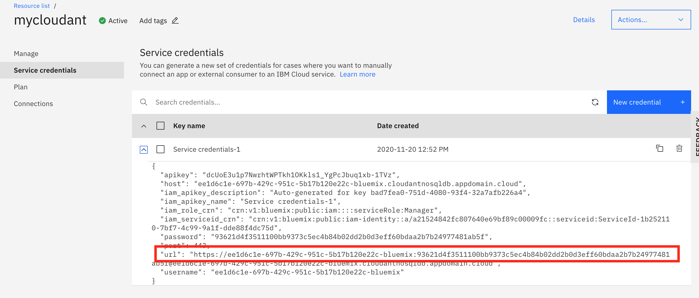

Lab 7. Connecting to External Storage¶
This lab configures our nodejs guestbook application to connect to an external database, outside of the kubernetes cluster where the guestbook app is deployed. We will be using a managed database service offered on IBM Cloud, but you can apply the concepts in this lab to connect to any external database service such as a legacy database you might have running on premise.
With a managed database service, you can take advantage of the provided service's built features for scaling, security, etc. If you'd rather implement your own database service, check out the previous labs in this workshop.
Prereqs¶
-
Before you begin, follow the prereqs in Lab0.
-
Clone the repos
cd $HOME git clone https://github.com/IBM/guestbook-nodejs.git guestbook-cloudant git clone --branch storage https://github.com/IBM/guestbook-nodejs-config.git cd $HOME/guestbook-nodejs-config/storage/lab1 -
Create a new Kubernetes namespace. This will help us avoid conflicts with previous labs. Switch to the new namespace so all subsequent commands will run within that namespace:
kubectl create namespace cloudant kubectl config set-context --current --namespace=cloudant
Please choose one of the two options for setting up the database service
Approach 1: Create a database service using the IBM Cloud console¶
Follow these steps to create a free lite CloudantDB on IBM Cloud using a free IBM Cloud account. Create an account if you haven't already.
Navigate to the IBM Cloud Catalog. Make sure your personal account in selected in the dropdown in the upper right. Search for Cloudant in the search bar and click the Cloudant tile. (Click Log In in the upper righthand side if you are not logged in).

Set the instance name to "mycloudant". Select "IAM and legacy credentials" to Authentication method. Ensure the "Lite" plan is selected. Then hit create.

Create a credential for your CloudantDB service¶
Locate your credentials in your CloudantDB service on IBM Cloud. From the IBM Cloud resource page, search for mycloudant to find your Cloudant service.

From the Cloudant DB service, select Service Credentials on the left. Then click the blue New credential on the right.

Select the default name and role (should be manager) for the credentials, and click Create.
Expand the credential and take note of the url parameter. We will be using this value to populate a Kubernetes secret in the next step.

Save your credentials in a Kubernetes secret¶
From a terminal where you are connected to your kubernetes cluster, run the following command to save the URL to your cloudant service in your cluster as a secret:
kubectl create secret generic binding-cloudant --from-literal=url=[CLOUDANT_URL]
Once completed, skip ahead to the next section
Approach 2: Use the IBM Cloud Operator to provision a database instance on IBM Cloud¶
The Operator Framework provides support for Kubernetes-native extensions to manage custom resource types through operators. Many operators are available through operatorhub.io, including the IBM Cloud operator. The IBM Cloud operator simplifies the creation of IBM Cloud services and resouces and binding credentials from these resources into a Kubernetes cluster. The instructions in this guide are adapted from the IBM Developer tutorial Simplify the lifecycle management process for your Kubernetes apps with operators.
With the IBM Cloud Kubernetes Service clusters at version 1.16 and later, the Operator Framework is already installed. So all you will need to do is install the IBM Cloud Operator. New clusters created after March 1st, 2020 should all be at this level (or later).
Create an API Key for your Target Account¶
We will configure the IBM Cloud Operator to manage resources on your personal IBM Cloud Account. You will be able to create and manage a Cloudant DB lite service that only you will have access to.
Note: The account that your Cloudant service will be created on MAY be different than the account where your Kubernetes cluster is located, so please keep that in mind. If you are participating in a workshop with the IBM Developer Advocacy team, we do this to avoid creating multiple lite cloudantDB services on the shared account where all the k8s clusters are running (IBM Cloud accounts are limited to 1 lite instance per service)
-
Login to your personal IBM Cloud account. Use
--ssoif using single-sign-on. Select your personal account when asked upon logging in.ibmcloud login$ ibmcloud login API endpoint: https://cloud.ibm.com Region: us-south Authenticating... OK Select an account: 1. John H. Zaccone's Account (a21524842fc807640e69bf89c00009fc) 2. Another Account (12345) Enter a number> 1 Targeted account John H. Zaccone's Account (a21524842fc807640e69bf89c00009fc) API endpoint: https://cloud.ibm.com Region: us-south User: John.Zaccone@ibm.com Account: John H. Zaccone's Account (a21524842fc807640e69bf89c00009fc) Resource group: No resource group targeted, use 'ibmcloud target -g RESOURCE_GROUP' CF API endpoint: Org: -
Create a service ID in IBM Cloud IAM. If possible, do not use spaces in the names for your IAM credentials. When you use the operator binding feature, any spaces are replaced with underscores.
ibmcloud iam service-id-create serviceid-ico -
Assign the service ID access to the required permissions to work with the IBM Cloud services. You will need the Manager role to provision a Cloudant service.
ibmcloud iam service-policy-create serviceid-ico --roles Manager,Administrator --resource-group-name default --region us-south -
We will also need to provide Account Management to allow us to create an cloudant service on our IBM Cloud account:
ibmcloud iam service-policy-create serviceid-ico --account-management --roles Administrator -
Create an API key for the service ID.
ibmcloud iam service-api-key-create apikey-ico serviceid-ico -
Set the API key of the service ID as your CLI environment variable. Now, when you run the installation script, the script uses the service ID's API key.
export IBMCLOUD_API_KEY=<apikey-ico-value> -
Confirm that the API key environment variable is set in your CLI.
echo $IBMCLOUD_API_KEY
Installing the IBM Cloud operator¶
-
If you don't already have
kubectlconfigured to point to your cluster, follow the setup steps in Lab0 to configure. -
Target the default resource group that your service ID has privledges to.
ibmcloud target -g default -
The operator marketplace catalog provides a URL for the resources to install for each operator. Install the IBM Cloud Operator with the following command:
curl -sL https://raw.githubusercontent.com/IBM/cloud-operators/master/hack/configure-operator.sh | bash -s -- installCheck that the pod for the IBM Cloud operator is running with:
kubectl get pods --namespace ibmcloud-operator-systemYou should see after a minute or two that the pod for the operator is running:
$ kubectl get pods --namespace ibmcloud-operator-system NAMESPACE NAME READY STATUS RESTARTS AGE ibmcloud-operator-system ibmcloud-operator-controller-manager-56c8548f89-stzdq 2/2 Running 0 14m
Understanding Operators¶
The Operator Pattern is an emerging approach to extend through automation the expertise of human operators into the cluster environment. Operators are intended to support applications and management of other resources in and related to kubernetes clusters starting at installation, but continuing to day 2 operations of monitoring, backup, fault recovery and, of course, updates.
Operators are custom code that uses the Kubernetes API (as a client) to implement a controller for a Custom Resource. Unlike the controllers built into the Kubernetes control plane which run on the Kubernetes master node, operators run outside of the Kubernetes control plan as pods on the worker nodes in the cluster. You can verify that fact by the kubectl get pods command above, which lists the pods of the operator running on a worker node.
In addition to the IBM Cloud Operator, there are many operators that can manage resources within your cluster available from the Operator Hub. The Operator Hub includes many useful operators including operators that implement database installation, monitoring tools, application development frameworks, application runtimes and more.
Your cluster now has the IBM Cloud operator installed. This operator is able to configure two custom resources in the cluster, a Service and a Binding. The Service defines a specific IBM Cloud service instance type to create, and the Binding specifies a named binding of a service instance to a secret in the cluster. For more details about the IBM Cloud operator see the project repository.
Creating an instance of Cloudant¶
For an application running within a Kubernetes cluster to be able to access an IBM Cloud service, the service needs to be created and the credentials to access the service must be added to the cluster so that they can be read by deployed applications. The Kubernetes cluster running the application accessing the service instance can be anywhere, but in this case you'll be using your Kubernetes cluster on IBM Cloud. We will be using a Cloudant DB service on IBM Cloud for this lab because it is free, json document datastore that will be easy for us to swap from our previous MongoDB database connection.
Create the service instance and bind to the cluster¶
-
Change into the
yamldirectory. apply thecloudant-ibmcloud.yamlfile.cd $HOME/guestbook-nodejs-config/storage/lab7 -
Apply the
cloudant-ibmcloud.yamlfile using kubectl. This file defines a Service and Binding resource:kubectl apply -f cloudant-ibmcloud.yamlThis file defines a Service and Binding resource and if successful there will be confirmation for both:
$ kubectl apply -f cloudant-ibmcloud.yaml service.ibmcloud.ibm.com/mycloudant created binding.ibmcloud.ibm.com/binding-cloudant created -
Check for the secret for the CloudantDB service instance added to the current namespace:
kubectl get secret binding-cloudantYou should see confirmation of the secret, but there may be a short delay as the credentials are obtained by the operator, so repeat this command until you no longer see an error like: Error from server (NotFound): secrets "binding-cloudant" not found
$ kubectl get secret binding-cloudant NAME TYPE DATA AGE binding-cloudant Opaque 6 40s
Debug¶
If the credentials have not been created after a few moments, check the logs of the kubernetes object you created.
kubectl describe service.ibmcloud.ibm.com/mycloudant
Check the IBM Cloud console - verify the Cloudant DB service¶
-
Go back to your IBM Cloud tab in the browser and click on the words IBM Cloud on the upper left of the top menu. Now your Dashboard view will show a Services item under the Resource summary. Click on the Services label, and search for
mycloudantto find your newly created instance
-
Click on the mycloudant label in the Services list. This will open up the control panel for the IBM CloudantDB service.
-
Click on the Service Credentials label and expands the service credential listed to see your service API Key - make a note of it or just keep the credentials visible.

-
Return to the Kubernetes Terminal tab in your web browser and enter this command to extract and decode the apikey from the secret created by the IBM Cloud Operator:
kubectl get secret binding-cloudant -o=jsonpath='{.data.apikey}' | base64 -d && echoNotice how the string displayed is exactly the same as the service API Key visible from the control panel for the service.
Lifecycle management with the IBM Cloud operator¶
Let's take a look at the custom resource definition (CRD) file that was used in this exercise (cloudant-ibmcloud.yaml).
```yaml
apiVersion: ibmcloud.ibm.com/v1alpha1
kind: Service
metadata:
name: mycloudant
spec:
plan: lite
serviceClass: cloudantnosqldb
---
apiVersion: ibmcloud.ibm.com/v1alpha1
kind: Binding
metadata:
name: binding-cloudant
spec:
serviceName: mycloudant
role: Manager
```
Note that the API version is different from what you may have seen in other resource files in this lab. Since Kubernetes objects are scoped by the API, there's no conflict with the re-use of the kind Service in this CRD. Recall that in the internal Kubernetes API, a resource of kind Service is used to expose network ports running on pods. Here, the Service object type is used to descibe an IBM Cloud platform service from the catalog. The operator uses the spec of the resource to select the desired IBM Cloud service type and offering plan.
The role of the IBM Cloud operator is to manage instances of these services and also create a Binding to the service that is stored as a secret in the cluster. The operator will monitor the IBM Cloud account service instances. If something happens to the service instance, the operator will detect the change and take action. For example, if a the service instance is deleted, the operator will create a new service instance and update the credentials stored in the binding secret.
Next Steps¶
Regardless of whether you did approach 1 or approach 2, the end result is the same. You should now have a CloudantDB service created on IBM Cloud with credentials to that service saved inside your Kubernetes as a secret. The next steps walk you through
1) Create a new database on the CloudantDB Service 1) Modify the guestbook application to read from CloudantDB 1) Build and push a new guestbook docker image 1) Edit the Kubernetes deployment yaml files to pull the new version of the application AND the credentials saved in the secret 1) Check your changes by deploying to Kubernetes and testing the application
Create a new database on the CloudantDB service¶
From your newly created Cloudant service on the IBM Cloud console, click Manage then Launch Dashboard.

Use your IBM Credentials to login if necessary. From the Cloudant Dashboard screen, click Create Database and give it name, such as "mydatabase". Select Non-partitioned, then click Create.

Remember this name as we will be using it later when we deploy our application.
Modify the guestbook application to read from CloudantDB¶
You will have to make minor changes to the Guestbook nodejs application to read from your newly created CloudantDB service.
Navigate to your guestbook application:
cd guestbook-cloudant/src
(Optional) Install the Loopback connector for CloudantDB. This has been done for you already.
cd guestbook-cloudant/src
npm install loopback-connector-cloudant --save
The connector provides the boilerplate code to connect to different backends. All we have to do is provide some basic configuration.
Define the Cloudant as a datasource by replacing src/server/datasources.json file with the following:
{
"in-memory": {
"name": "in-memory",
"localStorage": "",
"file": "",
"connector": "memory"
},
"cloudant": {
"name": "cloudant",
"connector": "cloudant",
"url" : "${CLOUDANT_URL}",
"database" : "${CLOUDANT_DB}"
}
}
The environment variables CLOUDANT_URL and CLOUDANT_DB will be loaded in our environment via our Kubernetes deployment.
Modify src/server/model-config.json to reference the datasource you just created:
...
"entry": {
"dataSource": "cloudant",
"public": true
}
...
Build and push a new docker image¶
Build a docker images with the changes and push to DockerHub. In this lab, we are building and pushing locally. In real-life, we would use CI/CD process to build and push our docker image from source control.
Build the docker image,
docker build -t $DOCKERUSER/guestbook-nodejs:cloudant .
docker login -u $DOCKERUSER
docker push $DOCKERUSER/guestbook-nodejs:cloudant
Your guestbook application is all set to talk to a Cloudant database. Next, we will configure our Kubernetes deployment to use the image you just pushed, and to load the missing environment variables: CLOUDANT_URL and CLOUDANT_DB from our binding-cloudant secret.
Configure Kubernetes yamls¶
We have a yaml file created for you, but you will need to enter the location of the Docker Image you built in the previous step.
Navigate to the location of your yaml deployment files, and inspect.
cd $HOME/guestbook-nodejs-config/storage/lab7
cat guestbook-deployment.yaml
apiVersion: apps/v1
kind: Deployment
metadata:
name: guestbook-cloudant
labels:
app: guestbook
spec:
selector:
matchLabels:
app: guestbook
template:
metadata:
labels:
app: guestbook
spec:
containers:
- name: guestbook
image: [IMAGE_NAME]
resources:
requests:
cpu: 100m
memory: 100Mi
ports:
- name: http
containerPort: 3000
env:
- name: CLOUDANT_URL
valueFrom:
secretKeyRef:
name: binding-cloudant
key: url
- name : CLOUDANT_DB
value: "[DB_NAME]"
Replace [IMAGE_NAME] in the file guestbook-deployment-cloudant.yaml with the name of the image you uploaded to Docker Hub. Replace [DB_NAME] with the name of the Cloudant Database your created in a previous step.
Notice how we load the environment variable CLOUDANT_URL from the binding-cloudant secret. This yaml files now defines all the environment variables our guestbook application needs to connect to our Cloudant DB.
Test your changes by deploying to Kubernetes¶
Deploy to kubernetes using kubectl apply:
kubectl apply -f guestbook-deployment.yaml
kubectl apply -f guestbook-service.yaml
Check your pods. If there are any errors, use kubectl describe pod [POD NAME] to debug,
kubectl get pods
Find the URL for the guestbook application by joining the worker node external IP and service node port.
HOSTNAME=`kubectl get nodes -ojsonpath='{.items[0].metadata.labels.ibm-cloud\.kubernetes\.io\/external-ip}'`
SERVICEPORT=`kubectl get svc guestbook -o=jsonpath='{.spec.ports[0].nodePort}'`
echo "http://$HOSTNAME:$SERVICEPORT"
Navigate to the guestbook in a broswer, and add some entries:

From the Cloudant Dashboard, selected myDatabase and you should see documents created for the entries you created.

This Cloudant database service is external to the Kubernetes service and data persists outside of the lifecycle of the container/pod/kubernetes cluster. The Cloudant service is a scalable json document storage solution that can be distributed across regions. For more information, check out the Cloudant Product Page.